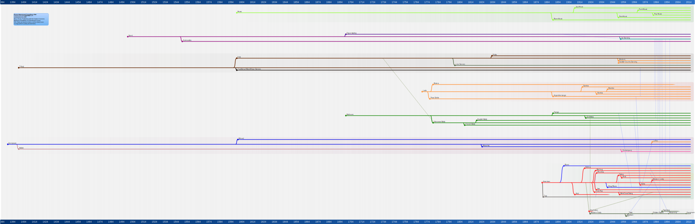

Controls:
Use mousewheel to zoom;
Drag using left-click;
Shift+mousewheel side-scroll, ( as god intended. ;-)
Ctrl+mousewheel vertical-scroll for good measure.
Shift+left-click resets the zoom.
Created using gnuclad and displayed thanks to a gently hacked http://www.jacklmoore.com/wheelzoom/
This is still not definitive. If you disagree with the selected dates or connections, then
fork-off
... your own version.
Copyright 2014-2016 Alexx Roche. MIT Licence or Creative Commons Attribution-ShareAlike 4.0 International License.